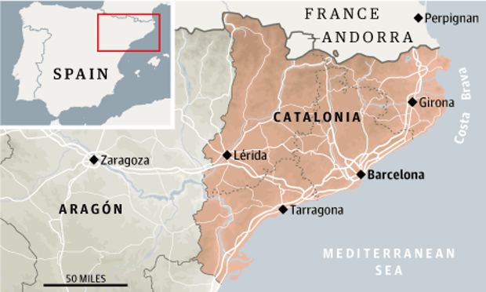

Mapping Semantic and Spatial Mediascapes of the Catalonian Independence Movement:
Geopolitics, Sports, and Black Boxes
Dissertation Defense, August 17th 2017
Research Objectives
- use data-driven analysis to explore big, digital news collections
- develop methodological theory based on objective and subjective evaluation
- describe geographic networks of media types and content
Research Objectives
To explore the geographic and semantic spaces which connect global geopolitics, sports, and the media in the Catalonian independence movement
A case study: Catalonian independence movement

My approach
1) collect and process articles during Catalonian parliamentary election
2) produce topic models using Latent Dirichlet Allocation
3) evaluate models using interestingness measures
4) extract geographic placenames from articles and geolocate
5) compare geographic patterns established by sources and themes
Latent Dirichlet Allocation
Semi-classification of text

Latent Dirichlet Allocation
Semi-classification of text
| topic | label |
|---|---|
| 'catalunya' 'independ' 'vote' 'catalan' 'junt' 'resolute' 'commiss' 'elect' | Catalonian independence |
| 'snp' 'vote' 'labour' 'scotland' 'parti' 'independ' 'referendum' 'sturgeon' | Scottish independence |
| 'leagu' 'catalan' 'football' 'club' 'catalonia' 'independ' 'play' 'game' | Catalonian independence + soccer |
3 critical parameters
- k - number of topics/clusters
- higher k = more detailed topics
- alpha - prior distribution of topics over documents
- higher alpha = documents assigned to topics more evenly
- minimum term-frequency/inverse-document frequency (tf-idf) - defines which terms to use in the vocabulary
- higher minimum tf-idf = fewer terms in the vocabulary
My data
21688 English news articles
August-November 2015
local, regional, national, international news sources
Model Sensativity Analysis
4 levels of k: 10, 25, 50, 100
4 alpha prior distributions
3 minimum term frequency - inverse document frequency
Interestingness Measures
| Measure | Classification | Description |
|---|---|---|
| Conciseness | Objective | pattern contains few attribute-value pairs |
| Generality/Coverage | Objective | pattern characterises greater proportion of inputs |
| Diversity | Objective | pattern contents are significantly different from one another |
| Peculiarity | Objective | pattern is far from other patterns as per a distance measure |
| Reliability | Objective | pattern occurs in high percentage of applicable cases |
| Novelty | Subjective | pattern contains information not previously known or inferrable |
| Unexpectedness/Surprisingness | Subjective | pattern contradicts existing expectations |
| Utility | Semantic | pattern contributes toward reaching a goal |
| Actionability | Semantic | pattern enables decision making |
Diversity
pattern contents (topics) are significantly different from one another
topic disparity yields new, separate insights
measured as variance from even distribution of each document to every topic
Diversity
pattern contents are significantly different from one another
Peculiarity
pattern is far from other patterns as per a distance measure
measured as inverse of proportion of terms shared by topics in a pair of patterns
number of topics and minimum tf-idf influence potentially shared terms
Peculiarity
pattern is far from other patterns


Utility/Actionability
pattern contributes toward reaching a goal/taking an action
I combine goals and actions in this evaluation
Patterns reveal interesting connections between Catalonia, sports, and other geographies
Utility/Actionability
pattern contributes toward a goal/taking an action
| k | alpha | tf-idf | topic | label #1 | label #2 |
|---|---|---|---|---|---|
| 25 | 0.011 | 0.03 | catalan mas espanyol resolute novemb casilla independ artur | Catalan independence | Espanyol soccer |
| 50 | 0.011 | 0.03 | mps respons fear english vote community owner irrat | English parliamentary voting | nagative emotional response |
| 100 | 0.029 | 0.03 | leagu catalan football club catalonia independ play game | soccer | Catalan independence |
Summary
| Measure | Recommendation | Confidence |
|---|---|---|
| Conciseness | low k | high |
| Generality/Coverage | low minimum tf-idf | high |
| Diversity | low alpha, mid tf-idf | medium |
| Peculiarity | low k: low tf-idf, high k: high tf-idf | low |
| Reliability | low tf-idf | low |
| Novelty | high topics, low tf-idf | high |
| Unexpectedness/Surprisingness | mid topics, medium tf-idf | low |
| Utility/Actionability | low tf-idf, mid alpha | medium |
Mediascapes
Appadurai (1993) Modernity at Large
- Media generates an ever-shifting geographic landscape
- Particularly reflecting globalized patterns
- Media creates networks between places through production and content
Mediascapes - media scale
Mediascapes - semantic space

Summary
- LDA presents a viable alternative to current media analyses
- evaluation, not validation
- interestingness measures provide new ways of thinking about model success
- scales of media production and audiences influence geographic networks
- soccer may increase global extent of local political issues
Thank you!
Sam Stehle
samstehle@psu.edu
@thHigherthFewer

A case study: Catalonian independence movement
Next steps
- World Baseball Classic, British Commonwealth Games
- independence movements in Scotland, Catalonia continue
- further refinement of spatio-temporal interestingness
- compare data-driven models to subjective coding
- how do international audiences engage with media events?
- real-time streaming applications